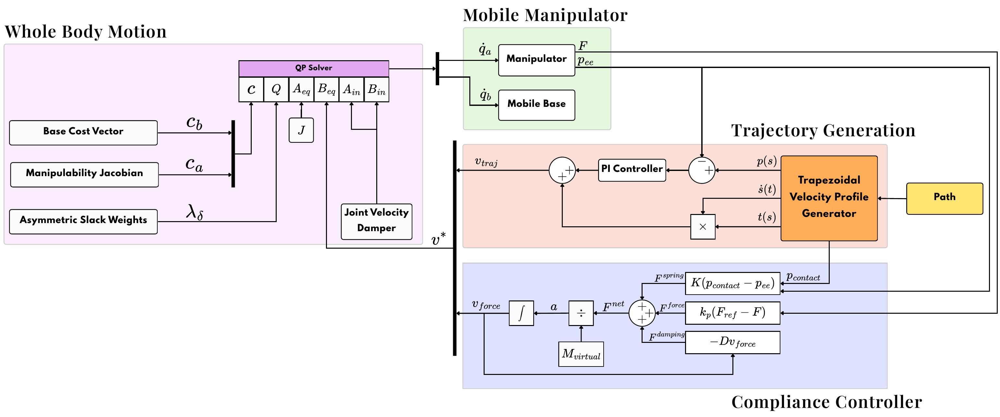
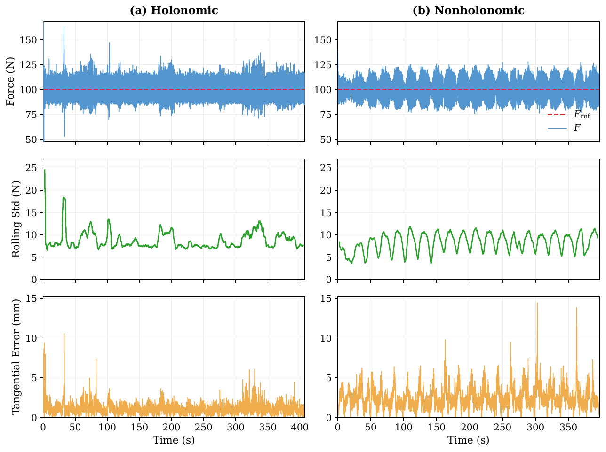
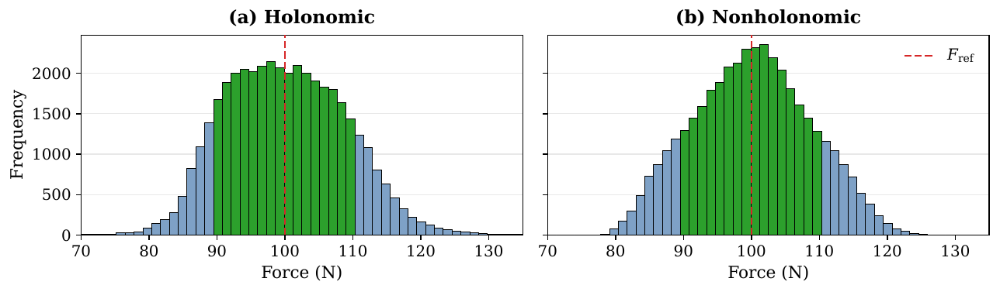

About the project
Mobile manipulators doing contact work, such as surface finishing or inspection on a wall, must press with a controlled force while following a path that often reaches beyond the arm.
Whole-body controllers usually lack explicit force regulation, and force-capable methods often assume a fixed base or treat the base and arm separately. This controller handles force and motion together on a moving base.
The base and arm are treated as one system. The arm moves first because its motion is cheaper in the optimization, and the base follows when the arm runs out of reach. The test task is a serpentine wall-cleaning path held at 100 N of contact force.
The work was done during a research internship at A*STAR ARTC in Singapore and published at IEEE/ASME AIM 2026.
Process
Treat base and arm as one robot
The mobile base and the UR5e arm are modeled as a single kinematic chain, so their motion is solved together.
Solve everything in one QP
One quadratic program handles trajectory tracking and limits for the whole body at 100 Hz.
Put force first
Force regulation is an asymmetrically weighted soft task. When force and trajectory cannot both be met, force tracking wins.
Add Cartesian compliance
A compliance layer keeps contact stable and avoids problems near singular configurations.
Compare on two robots
The same controller runs unchanged on an omnidirectional RB-Kairos and a differential-drive RB-Theron, against PID force control and admittance control.
Results
- Force RMSE is 9.29 N on the holonomic base and 8.60 N on the nonholonomic base.
- Trajectory RMSE is 1.35 mm and 2.79 mm respectively.
- The QP solves in about 2.3 ms, well inside the 10 ms control period.
Figures



Where it stands
All results come from Gazebo simulation. Hardware validation on the real platforms is the next step.
System
| Platforms | Robotnik RB-Kairos (omnidirectional, 9 DOF) and RB-Theron (differential drive, 8 DOF), each with a UR5e |
|---|---|
| Software | ROS 2 Jazzy, Gazebo |
| Control rate | 100 Hz |
| Paper | IEEE/ASME AIM 2026, Genova, Italy |
| Program | A*STAR ARTC, SIPGA research internship |